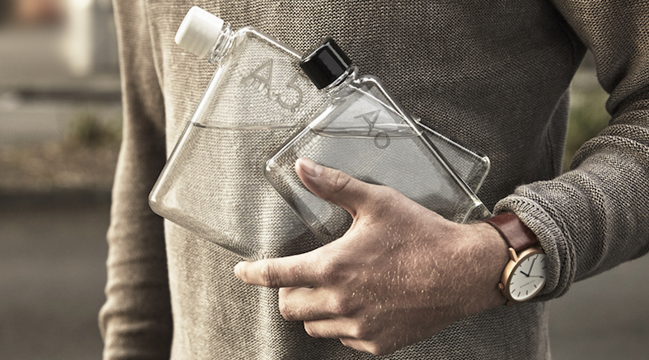

スタイリッシュに水を携帯！ノート型ボトル「memobottle」のデザインが秀逸
通常のソレとはまったく異なる形状のウォーターボトル。まるでノートのようなビジュアルに、多くの人が虜になっている模様です。なるほど、確かにその気持ちわかります。好奇心をくすぐられる！大人なマイボトルが登場 アメリ… >続きを読む
通常のソレとはまったく異なる形状のウォーターボトル。まるでノートのようなビジュアルに、多くの人が虜になっている模様です。なるほど、確かにその気持ちわかります。好奇心をくすぐられる！大人なマイボトルが登場 アメリ… >続きを読む
簡単に、ある程度綺麗な写真を撮影できるiPhone。しかし、いざという時に手ブレを起こしたり、うまく被写体を捉えられなかったり…なんてことはありませんか？ そんな悩みを解決するのが、このiPhone用カメラグリップ「PI… >続きを読む
しし座の彼と付き合っている、そこのあなた。ここで紹介する「YourTango」の記事は、あなたのためにライターSarah Fader氏が書いたもの。彼をもっとメロメロにさせる秘訣がまとめられていますよ。 それでは早速、し… >続きを読む
よくよく見ると、マットな素材のなかにも上品な光沢が確認できる独特の質感。これらのバッグ、じつはすべて畳の縁の部分「畳縁（たたみべり）」でできているんです。 元建築士が、畳縁をバッグに変えた3つの理由とは？ これらのアイテ… >続きを読む